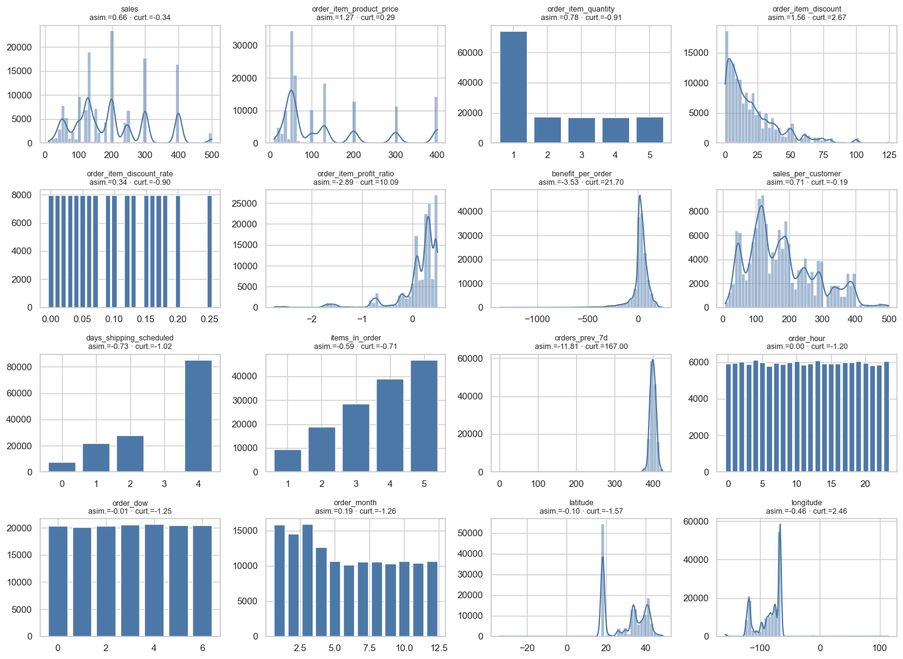
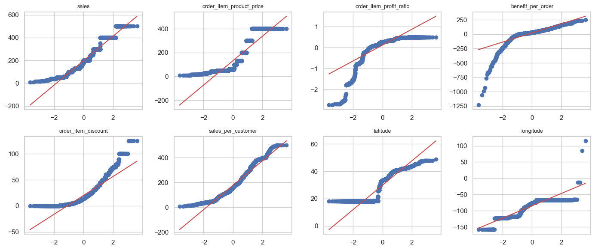
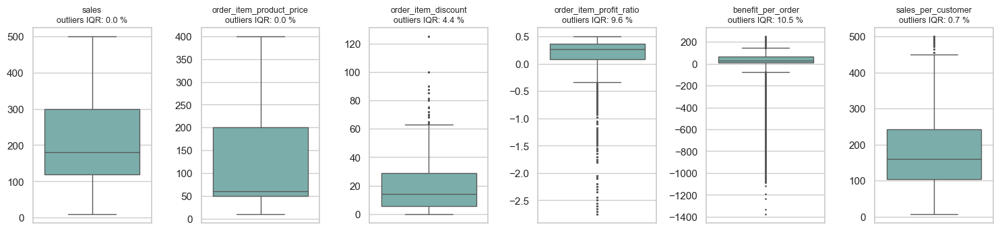
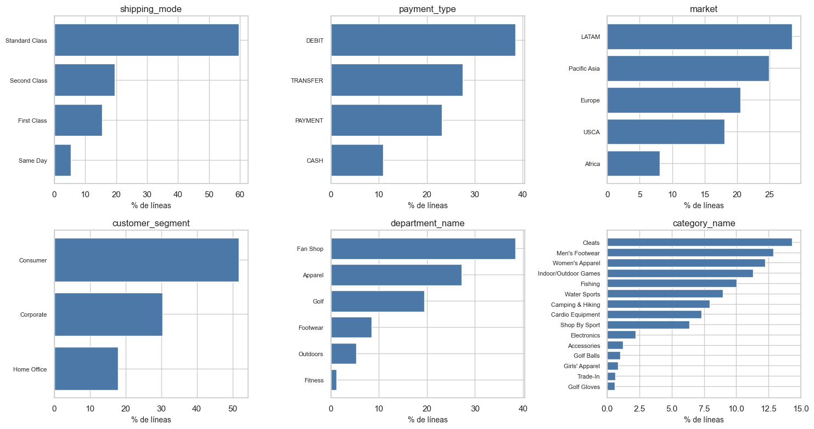

4. Análisis univariado (2.2)#
Para cada variable candidata (sin objetivo, identificadores, datos personales ni variables posteriores al pedido): tipo y cardinalidad, estadísticos, distribución, asimetría y curtosis, normalidad, atípicos y, en las categóricas, frecuencias y categorías raras. Solo entrenamiento.
from pathlib import Path
import re, sys, warnings
import numpy as np
import pandas as pd
import matplotlib.pyplot as plt
import seaborn as sns
from IPython.display import Markdown, display
project_root = Path.cwd().resolve()
while not (project_root / "_config.yml").exists():
if project_root.parent == project_root:
raise FileNotFoundError("No se encontró _config.yml. Ejecuta el notebook dentro de la carpeta del libro.")
project_root = project_root.parent
if str(project_root) not in sys.path:
sys.path.insert(0, str(project_root))
for _folder in ("tables", "figures"): # se crean si no existen
(project_root / _folder).mkdir(exist_ok=True)
from src.project_utils import *
configure_plots()
pd.set_option("display.max_columns", 80)
pd.set_option("display.width", 170)
pd.set_option("display.max_colwidth", 70)
TABLES = project_root / "tables"
def md_out(text):
display(Markdown(text))
from scipy import stats
train = load_train()
y = train[TARGET]
NUM = ["sales", "order_item_product_price", "order_item_quantity", "order_item_discount", "order_item_discount_rate",
"order_item_profit_ratio", "benefit_per_order", "sales_per_customer", "days_shipping_scheduled",
"items_in_order", "orders_prev_7d", "order_hour", "order_dow", "order_month", LAT, LON]
CAT = ["shipping_mode", "payment_type", "market", "order_region", "order_country", "order_state", "order_city",
"customer_segment", "customer_country", "customer_state", "customer_city", "department_name", "category_name", "product_name"]
Variables numéricas: estadísticos#
est = numeric_summary(train[NUM])
est.to_csv(TABLES / "estadisticas_numericas.csv")
est[["media", "mediana", "desv_est", "p01", "p25", "p75", "p99", "asimetría", "curtosis", "ceros_%", "únicos", "outliers_IQR_%"]].round(3)
| media | mediana | desv_est | p01 | p25 | p75 | p99 | asimetría | curtosis | ceros_% | únicos | outliers_IQR_% | |
|---|---|---|---|---|---|---|---|---|---|---|---|---|
| sales | 196.985 | 179.970 | 111.329 | 29.980 | 119.980 | 299.950 | 499.950 | 0.658 | -0.338 | 0.000 | 124 | 0.000 |
| order_item_product_price | 131.294 | 59.990 | 117.028 | 15.990 | 49.980 | 199.990 | 399.980 | 1.267 | 0.286 | 0.000 | 29 | 0.000 |
| order_item_quantity | 2.204 | 1.000 | 1.471 | 1.000 | 1.000 | 3.000 | 5.000 | 0.782 | -0.915 | 0.000 | 5 | 0.000 |
| order_item_discount | 19.974 | 14.000 | 19.561 | 0.000 | 5.400 | 28.800 | 80.000 | 1.558 | 2.674 | 5.556 | 580 | 4.440 |
| order_item_discount_rate | 0.102 | 0.100 | 0.070 | 0.000 | 0.040 | 0.160 | 0.250 | 0.341 | -0.901 | 5.556 | 18 | 0.000 |
| order_item_profit_ratio | 0.120 | 0.270 | 0.467 | -1.750 | 0.080 | 0.360 | 0.500 | -2.886 | 10.089 | 0.656 | 162 | 9.633 |
| benefit_per_order | 21.156 | 31.120 | 96.644 | -405.870 | 7.200 | 63.060 | 178.463 | -3.532 | 21.697 | 0.656 | 18482 | 10.547 |
| sales_per_customer | 177.011 | 159.990 | 101.307 | 25.190 | 103.990 | 242.400 | 424.960 | 0.706 | -0.191 | 0.000 | 1951 | 0.714 |
| days_shipping_scheduled | 2.932 | 4.000 | 1.374 | 0.000 | 2.000 | 4.000 | 4.000 | -0.732 | -1.023 | 5.390 | 4 | 0.000 |
| items_in_order | 3.663 | 4.000 | 1.243 | 1.000 | 3.000 | 5.000 | 5.000 | -0.590 | -0.714 | 0.000 | 5 | 0.000 |
| orders_prev_7d | 397.928 | 399.000 | 22.231 | 374.000 | 394.000 | 405.000 | 418.000 | -11.810 | 166.997 | 0.001 | 427 | 1.561 |
| order_hour | 11.500 | 12.000 | 6.922 | 0.000 | 5.000 | 18.000 | 23.000 | 0.000 | -1.204 | 4.153 | 24 | 0.000 |
| order_dow | 3.010 | 3.000 | 1.999 | 0.000 | 1.000 | 5.000 | 6.000 | -0.009 | -1.246 | 14.246 | 7 | 0.000 |
| order_month | 6.004 | 6.000 | 3.541 | 1.000 | 3.000 | 9.000 | 12.000 | 0.187 | -1.259 | 0.000 | 12 | 0.000 |
| latitude | 29.746 | 33.145 | 9.802 | 18.201 | 18.266 | 39.280 | 45.355 | -0.102 | -1.566 | 0.000 | 8143 | 0.004 |
| longitude | -84.936 | -76.891 | 21.465 | -123.027 | -98.467 | -66.371 | -66.025 | -0.458 | 2.465 | 0.000 | 4179 | 0.795 |
fig, axes = plt.subplots(4, 4, figsize=(15, 11))
for ax, col in zip(axes.ravel(), NUM):
s = train[col]
discrete = s.nunique() <= 25
if discrete:
vc = s.value_counts().sort_index()
ax.bar(vc.index.astype(float), vc.values, color="#4c78a8", width=0.8 * (np.diff(vc.index.astype(float)).min() if len(vc) > 1 else 1))
else:
sns.histplot(s, bins=50, kde=True, ax=ax, color="#4c78a8")
ax.set_title(f"{col}\nasim.={s.skew():.2f} · curt.={s.kurt():.2f}", fontsize=9); ax.set_xlabel(""); ax.set_ylabel("")
plt.tight_layout(); save_figure(fig, "04_histogramas_numericas.png"); plt.show()

Interpretación.
Precios y ventas (
sales,order_item_product_price,sales_per_customer) son discretos (pocos precios distintos) y con asimetría positiva: muchos productos de bajo precio y unos pocos caros. Se transforman conlog1p(cap. 10).Ganancia (
benefit_per_order,order_item_profit_ratio) tiene cola izquierda pesada (curtosis alta): ventas con pérdidas grandes. Al ser negativa,log1pno aplica; se escala y se conserva.days_shipping_scheduledtoma solo 4 valores, uno por modo de envío.items_in_order(1–5) yorder_item_quantity(1–5) son conteos pequeños.Hora, día y mes son cíclicos: su distribución es casi uniforme, y se codifican con seno y coseno para que 23 h y 0 h queden cerca.
orders_prev_7des casi constante (≈ 380 pedidos semanales), con una caída en la primera semana (no hay historia previa) y un cambio de nivel al final del periodo (cap. 7).latitude/longitudeson multimodales: corresponden a ciudades (cap. 8).
Normalidad y atípicos#
Prueba de D’Agostino-Pearson sobre una muestra de 5.000 líneas (con n = 143.000 cualquier desviación mínima resultaría significativa) y gráficos Q-Q.
rng = np.random.default_rng(RANDOM_STATE)
idx = rng.choice(len(train), 5000, replace=False)
norm = []
for col in NUM:
s = train[col].iloc[idx]
k2, p = stats.normaltest(s)
norm.append({"variable": col, "K2": k2, "p_valor": p, "¿normal al 5 %?": "sí" if p > 0.05 else "no"})
norm = pd.DataFrame(norm)
norm.to_csv(TABLES / "normalidad.csv", index=False)
display(norm.round(4))
fig, axes = plt.subplots(2, 4, figsize=(14, 6))
for ax, col in zip(axes.ravel(), ["sales", "order_item_product_price", "order_item_profit_ratio", "benefit_per_order",
"order_item_discount", "sales_per_customer", LAT, LON]):
stats.probplot(train[col].iloc[idx], dist="norm", plot=ax)
ax.set_title(col, fontsize=9); ax.set_xlabel(""); ax.set_ylabel("")
plt.tight_layout(); save_figure(fig, "04_qqplots.png"); plt.show()
cont = ["sales", "order_item_product_price", "order_item_discount", "order_item_profit_ratio", "benefit_per_order", "sales_per_customer"]
fig, axes = plt.subplots(1, len(cont), figsize=(15, 3.6))
for ax, col in zip(axes, cont):
sns.boxplot(y=train[col], ax=ax, color="#72b7b2", fliersize=1)
ax.set_title(f"{col}\noutliers IQR: {est.loc[col, 'outliers_IQR_%']:.1f} %", fontsize=9); ax.set_ylabel("")
plt.tight_layout(); save_figure(fig, "04_boxplots.png"); plt.show()
| variable | K2 | p_valor | ¿normal al 5 %? | |
|---|---|---|---|---|
| 0 | sales | 323.5969 | 0.0 | no |
| 1 | order_item_product_price | 832.0994 | 0.0 | no |
| 2 | order_item_quantity | 1266.1256 | 0.0 | no |
| 3 | order_item_discount | 1398.9201 | 0.0 | no |
| 4 | order_item_discount_rate | 834.7984 | 0.0 | no |
| 5 | order_item_profit_ratio | 3116.9225 | 0.0 | no |
| 6 | benefit_per_order | 3978.3705 | 0.0 | no |
| 7 | sales_per_customer | 338.0737 | 0.0 | no |
| 8 | days_shipping_scheduled | 2259.7550 | 0.0 | no |
| 9 | items_in_order | 538.7798 | 0.0 | no |
| 10 | orders_prev_7d | 8399.0756 | 0.0 | no |
| 11 | order_hour | 4546.4492 | 0.0 | no |
| 12 | order_dow | 5896.7708 | 0.0 | no |
| 13 | order_month | 9768.5503 | 0.0 | no |
| 14 | latitude | 24146.4955 | 0.0 | no |
| 15 | longitude | 453.6696 | 0.0 | no |


Interpretación. Ninguna variable es normal (era esperable: son precios, conteos y coordenadas). La normalidad no es requisito de la regresión logística; la transformación logarítmica se aplica para reducir la influencia de la cola, no para normalizar. Los atípicos por IQR se concentran en la ganancia (≈ 10 %), y corresponden a ventas con pérdida, no a errores (capítulo 2): se conservan.
Variables categóricas: cardinalidad, frecuencias y categorías raras#
filas = []
for col in CAT:
vc = train[col].value_counts(normalize=True)
filas.append({"variable": col, "cardinalidad": train[col].nunique(), "moda": vc.index[0], "frecuencia_moda_%": 100 * vc.iloc[0],
"categorías_raras_<0,5%": int((vc < 0.005).sum()), "líneas_en_raras_%": 100 * vc[vc < 0.005].sum()})
res_cat = pd.DataFrame(filas)
res_cat.to_csv(TABLES / "resumen_categoricas.csv", index=False)
display(res_cat.round(2))
fig, axes = plt.subplots(2, 3, figsize=(15, 8))
for ax, col in zip(axes.ravel(), ["shipping_mode", "payment_type", "market", "customer_segment", "department_name", "category_name"]):
vc = train[col].value_counts().head(15).iloc[::-1]
ax.barh(vc.index, 100 * vc.values / len(train), color="#4c78a8")
ax.set_title(col); ax.set_xlabel("% de líneas"); ax.tick_params(axis="y", labelsize=8)
plt.tight_layout(); save_figure(fig, "04_categoricas.png"); plt.show()
| variable | cardinalidad | moda | frecuencia_moda_% | categorías_raras_<0,5% | líneas_en_raras_% | |
|---|---|---|---|---|---|---|
| 0 | shipping_mode | 4 | Standard Class | 59.67 | 0 | 0.00 |
| 1 | payment_type | 4 | DEBIT | 38.46 | 0 | 0.00 |
| 2 | market | 5 | LATAM | 28.43 | 0 | 0.00 |
| 3 | order_region | 23 | Central America | 15.57 | 1 | 0.39 |
| 4 | order_country | 164 | Estados Unidos | 17.36 | 125 | 12.36 |
| 5 | order_state | 1089 | California | 3.47 | 1055 | 62.63 |
| 6 | order_city | 3553 | New York City | 1.54 | 3535 | 85.35 |
| 7 | customer_segment | 3 | Consumer | 51.80 | 0 | 0.00 |
| 8 | customer_country | 2 | EE. UU. | 61.74 | 0 | 0.00 |
| 9 | customer_state | 44 | PR | 38.26 | 18 | 3.84 |
| 10 | customer_city | 562 | Caguas | 36.86 | 546 | 48.81 |
| 11 | department_name | 6 | Fan Shop | 38.40 | 0 | 0.00 |
| 12 | category_name | 24 | Cleats | 14.30 | 9 | 2.27 |
| 13 | product_name | 54 | Perfect Fitness Perfect Rip Deck | 14.30 | 45 | 9.18 |

Interpretación y tratamiento de categorías raras.
shipping_mode: Standard Class domina (≈ 60 %); Same Day es la más rara (≈ 5 %), pero con miles de casos.payment_type,market,customer_segmentydepartment_nametienen pocas categorías y ninguna rara.order_country(≈ 160),order_state,order_city,customer_cityyproduct_nametienen alta cardinalidad y muchas categorías raras. Codificarlas tal cual crearía cientos de columnas con pocos casos (sobreajuste). Tratamiento: en el Pipeline,OneHotEncoder(min_frequency=0.005, handle_unknown="infrequent_if_exist")agrupa en «infrequent» las categorías con < 0,5 % de líneas calculadas solo en entrenamiento, y las categorías nuevas de la prueba caen en ese mismo grupo. Las de ciudad se descartan (la región y el país ya capturan la geografía, cap. 5).customer_countrysolo tiene EE. UU. y Puerto Rico (sesgo de muestreo, cap. 2).